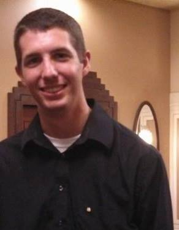

Justin Baumgartner (@justbaum30)

Justin is like a senior and stuff and he'll probably go on to make something exciting.
He worked on these things...database, osx app, etc
Logan Hood (@hoodlm)

Josh Johnson (@awesomejohnson)
Ryan McGraw (@mcgrawr)

Ryan is a senior at the University of South Carolina and will be graduating with a BS in Computer Information Systems with Honors in May 2014. Following graduation, Ryan plans on returning to his hometown of Marietta, GA to find a job as an entry level computer software designer.
Ryan's main focus for Project Crystal Blue was designing the user interface for the iOS application. Additionally, he hooked up the back-end models with all the front-end designs he created. Ryan particularly focused on making the mobile application as simple and user friendly as possible for use in the field and lab.